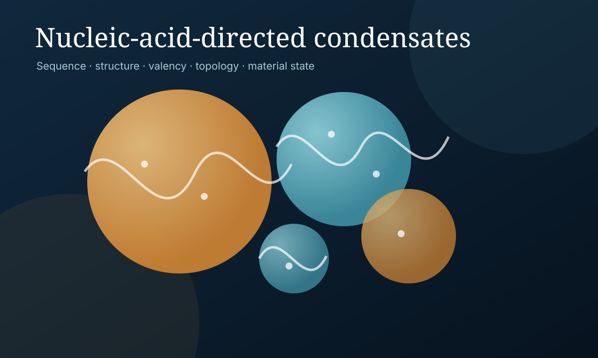

Featured Perspective
Fate of Nucleic Acid-Directed Biomolecular Condensates
Nucleic acids are not merely negatively charged polymers. Their sequence, secondary structure, valency, topology, and binding partners can influence whether a condensate remains liquid-like, matures, becomes multiphasic, forms a gel, or transitions toward a solid-like state.
Read the perspective overview →